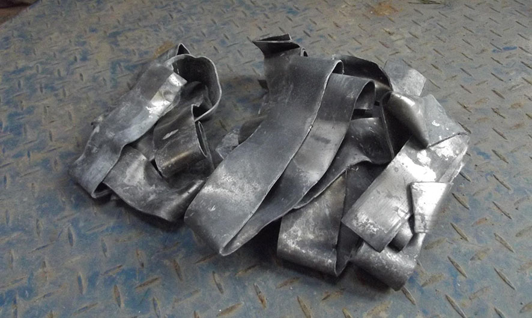
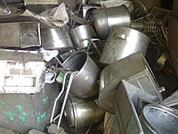
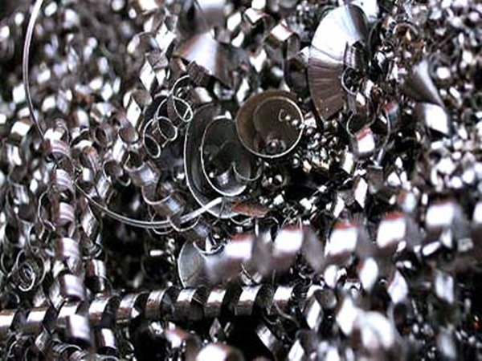
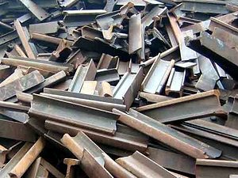
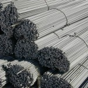
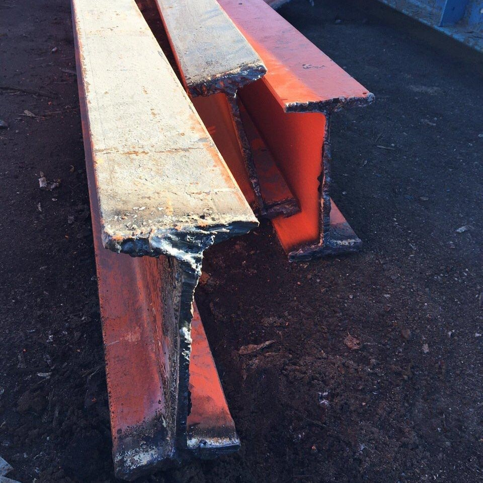
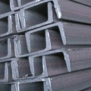
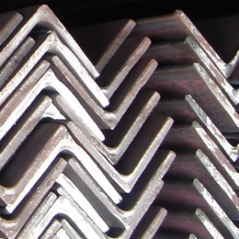
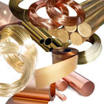
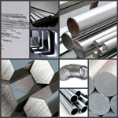

Чорні метали | кольорові метали


Компанія «ВІККОН» реалізує різні види брухту чорних та кольорових металів.
Серед них:
- Брухт свинцю.
- Брухт нержавіючої сталі.
- Різні види стружок чорних та кольорових металів.
- Брухт чавуну та інші види чорних металів.
- Брухт ділових відходів металу.
-

Брухт свинцю -

Брухт нержавіючої сталі -

Стружка чорних та кольорових металів -

Брухт чавуну
Діловий брухт
Діловий брухт - це вироби металопрокату (арматура, труби, швелер, балка, тавр і т. п.), які були у вжитку, але їх можна використовувати повторно.
У чому полягає вигідність покупки ділового брухту? Наприклад, Ви вирішили почати будівництво або ремонт дачі, будинка, невеликих виробничих будівель і споруд, але кошторис занадто високий через ціни на труби, куточки, арматуру та інші необхідні Вам матеріали. До того ж, пропоновані до продажу партії таких виробів дуже великі для Ваших робіт. Ми пропонуємо Вам значно знизити витрати на такі матеріали, купивши більш дешеві, але не менш якісні вироби, що були у вжитку. Ми допоможемо Вам ефективно вирішити цю проблему. У продажу є швелер, куточок, арматура, балка та інші види ділового брухту. Наші фахівці проконсультують Вас з будь-яких питань, пов’язаних з придбанням ділового брухту.
-
Компанія «Віккон» продає арматуру б/в у гарному стані, цілу, чи не кручену, різних розмірів і різного профільного типу (періодичного профілю і гладку).

-
Двотаврова балка, так само відома, як двутавр, являє собою один з елементів складної конструкції, завдяки якій можна розподілити навантаження між декількома частинами споруди. Вона схожа собою на букву "Т", з її допомогою будують мости, стадіони, естакади, що несуть покриття, складні промислові покриття.
Компанія «Віккон» продає двотаврові балки б/в у гарному стані.
-
Швелер - це металевий гнутий профіль, який у розрізі нагадує букву "П"
Компанія «Віккон» продає б/в швелер різних серій (швелер серії У, П, Е, Л, С) та розмірів.

-
Куточки мають 2 види в залежності від довжини їх сторін: рівнополочні, полками.
Компанія «Віккон» продає б/в куточки різних видів і розмірів.

-
Заготівки, прокат, вироби з міді, бронзи, латуні: (болванка, лист, пруток, дріт, шестигранник)

-
Заготівки, прокат, вироби з міді, бронзи, латуні: (болванка, лист, пруток, дріт, шестигранник)
